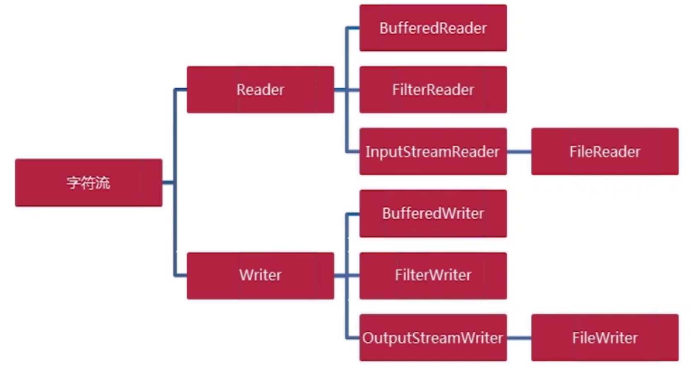
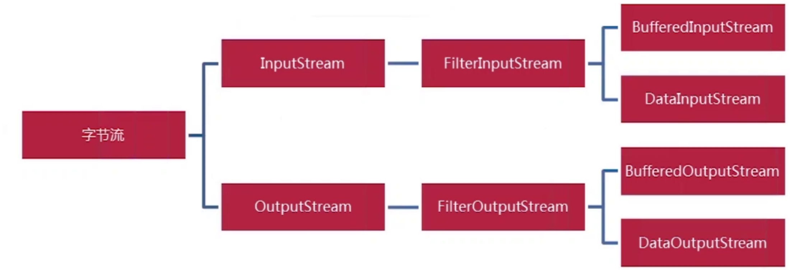
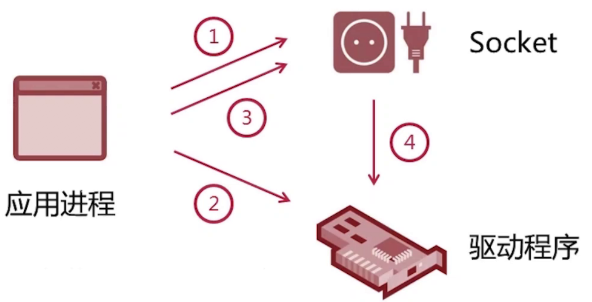
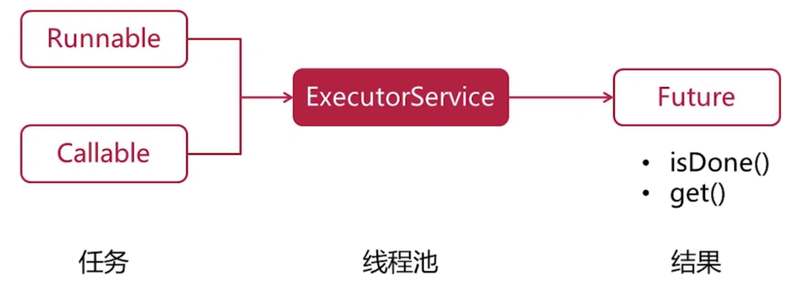
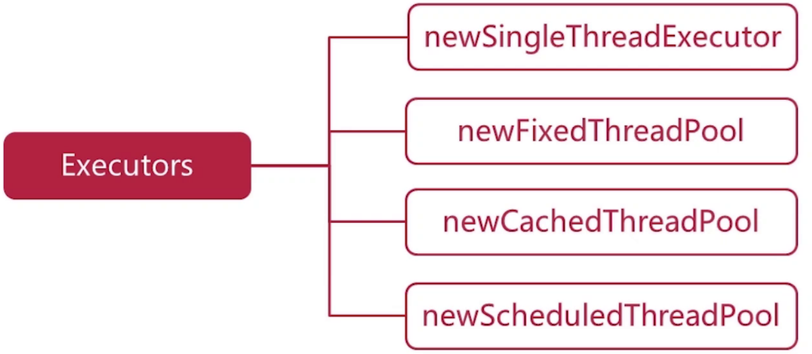

学习备注
学习java io中的装饰器模式
学习线程池相关的知识
学习socket等相关的知识
多线程并发这块是先导知识，后序要深入理解
Ok-学习 同步 异步 阻塞 非阻塞
基础网络层的解析与协议
#####
概述
BIO：Java 1.4以前
NIO： java 1.4
AIO： java 1.7
- 网络编程的本质：进程间的通信
- 通信的基础：IO模型
java io
字符流

字节流

Socket
- socket也是一种数据源
socket是网络通信的断点
通过socket发送数据

同步 异步 阻塞 非阻塞
- 同步和异步关注的是消息通信机制
同步：就是在发出一个调用时，在没有得到结果之前，该调用就不返回
异步：调用在发出之后，这个调用就直接返回了，所以没有返回结果
- 阻塞和非阻塞关注的是程序在等待调用结果（消息，返回值）时的状态
阻塞调用：是指调用结果返回之前，当前线程会被挂起。调用线程只有在得到结果之后才会返回
非阻塞调用：指在不能立刻得到结果之前，该调用不会阻塞当前线程
线程池

- 创建线程池的方法
